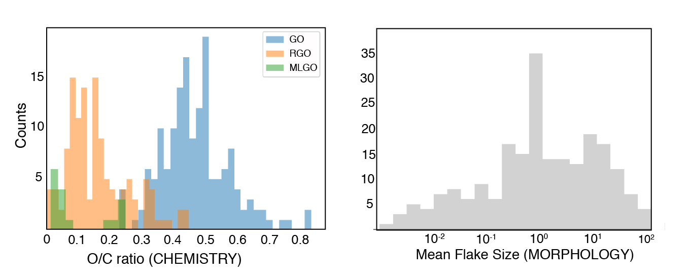
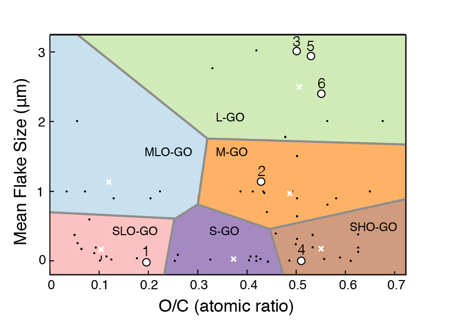
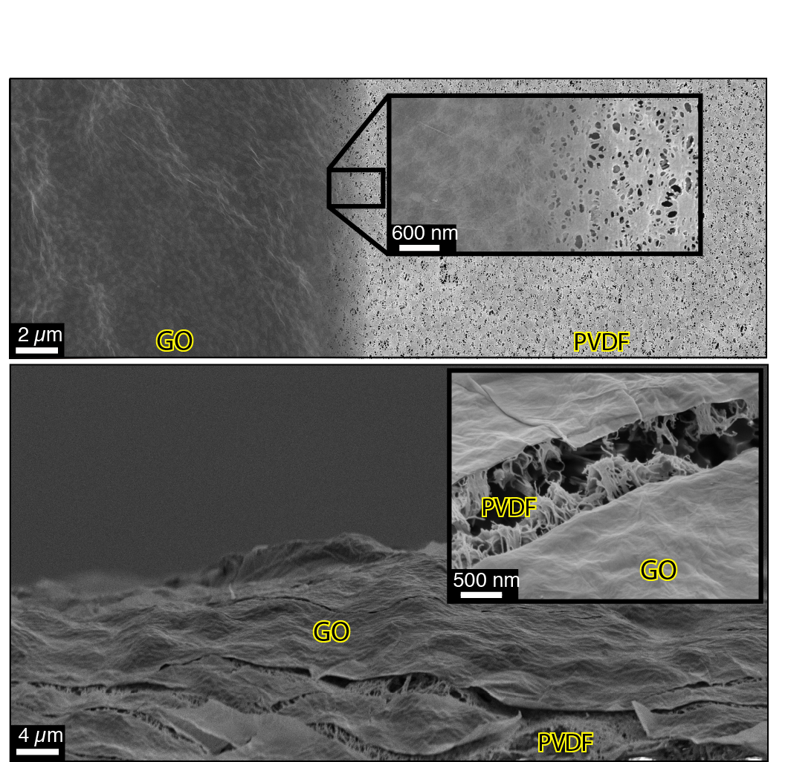
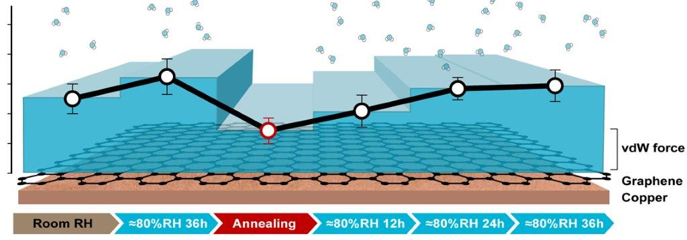
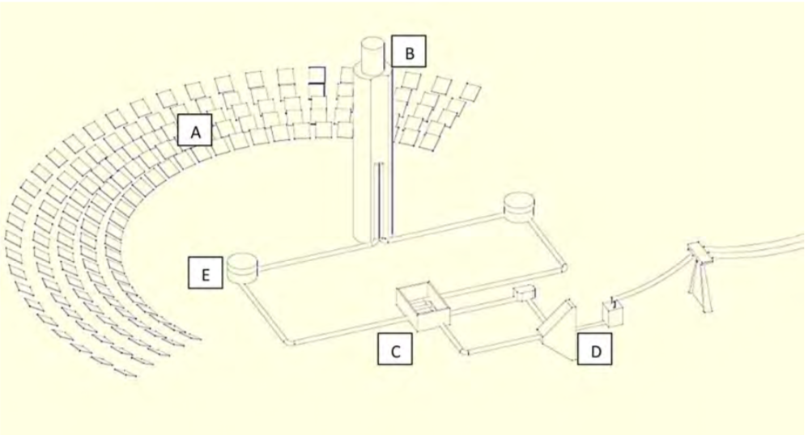

According to Aristotle, in order to explain the world and objects around us we need to recognize four causes:
i) the MATTER determined by the material of the object
ii) the FORM determined by the shape of the object
iii) the AGENT determined by the transformation of the object
iv) the END determined by the purpose of the object.
Although, this knowledge was professed more than 2000 years ago, there is analogism with modern science. In particular, in materials science and nanotechnology when we describe an object, we tend to refer to those four causes: i) the matter is the nature of the nanomaterial (its chemistry and morphology); ii) the form is how the nanomaterial is assembled; iii) the agent is the process through which a nanomaterial is assembled; and iv)the end is the functionality of the nanomaterial.
The image above represents the graphene oxide(GO) nano-characterization with the use of surface science technique. GO can be thought as a single layer carbon material decorated with oxygen functionalities. GO is a meta-stable nanomaterial, which can be synthesized and tuned through physical and chemical processes.
This ability is the main advantage, but also the crux of this nanomaterial. From the one hand, it opens opportunities for material functionalization and the possibility to fabricate materials with specific properties. On the other hand, it reduced reproducibility of the experiments and hinders scientific advances. The image below represents a careful research of the GO literature in term of its chemistry and morphology. As one can see these two properties are characterized by large variability.

The majority of the GO literature was researched in order to locate scien-tific works that characterized both GO chemistry and morphology and the data was classified using the K-mean clustering algorithm. K-mean clustering classified the chemo-morphological data (black dots) into six GO categories.

GRAPHENE OXIDE NANOSCROLLS (GONS)
In collaboration with researchers at the Massachusets Institute of Technology, we were able to synthesize graphene oxide nanoscrolls (GONS) with tunable dimensions (i.e. tunable FORM) via low and high-frequency ultrasound solution processing techniques.
Each scroll, made by rolling up a single, atom-thick layer of GO, could be tailored to trap specific molecules and pollutants in its tightly wound folds. Billions of these scrolls, stacked layer by layer, may produce a lightweight, durable, and highly selective water purification membrane.
GRAPHENE OXIDE ARCHITECTURAL LAMINATE (GOAL)
GO can be assembled in laminar nanometer structure via different casting process in order to create selective membranes. The selectivity is dictated by the separation distances between neighboring GO flakes.
The separation between neighboring GO flakes is dictated by the amount of oxygen and it can be finely controlled by chemical and physical porcess. In thi s analysis we were able to tune the architecture of the GO laminate, thus creating a graphene oxide architectural laminate (GOAL, figure below). Results show that the vertical spacing is the most important nanodimension for water transport phenomena through the membrane.

FULLY CARBON MEMBRANES (FCM)
Research efforts in membrane technology is divided into two fields depending on the material used: i) ceramic and ii) polymeric membranes. Motivated by the aim to harmonize the two research fields in a sort of "Hegelian apporach", we investigated the possibility to originate a new class of membranes uniting the advantages of polymer and ceramic membranes. In particular, a Fully Carbon Membrane (FCM), constituted by hierarchical elemental carbon structures from the mechanical support to the selective layer, was manufactured.

@ Masdar Institute of Science and Technology, I was researching inside the Laboratory of Energy and Nano Sciences (LENS) led by Prof. Matteo Chiesa. Inside LENS, my research was mainly based on characterization of surfaces by means of Atomic Force Microscopy (AFM). The AFM characterization method was based on novel techniques for the reconstruction of nanoscale force profiles between the AFM tip and the surface and advanced imaging modes. The force profile, which encodes all the required information about physical, mechanical and chemical properties of samples, was used to monitor the wettability of carbon materials. The research started with the analysis of graphite and then it moved towards the analysis of graphene on different substrates such as copper, platinum, and gold. The research was driven by the question of the research communities whether or not a graphene layer is transparent to water. In order to have a multi-length-scale approach, other surface science techniques such as contact angles and environmental SEM were coupled with AFM measurements. Results showed:
i) graphitic materials (i.e. graphite and graphene) face a wettability transition, becoming more hydrophobic, when exposed to environmental conditions;
ii) graphene is not wetting transparent at different length scales.

@ Beijing University of Technology, I investigated the feasibility of concentrating solar power (CSP) technology in China. In terms of high-power solar plants, concentrating towers are characterized by high efficiency, but the investment costs are high as well. For this reason, a fundamental issue consists in simulating the solar tower behavior in different locations, in order to provide a precise estimation of both annual energy production and return of the investment. In the investigation, I simulated a concentrated tower plant behavior in several Chinese areas suitable for such a technology. All the simulations proposed here have been obtained through a Solar Advisor Model (SAM). After model validation, results have shown encouraging perspectives for the exploitation of this technology in China, with an annual overall efficiency of 14% for the 20 MW power plant.
